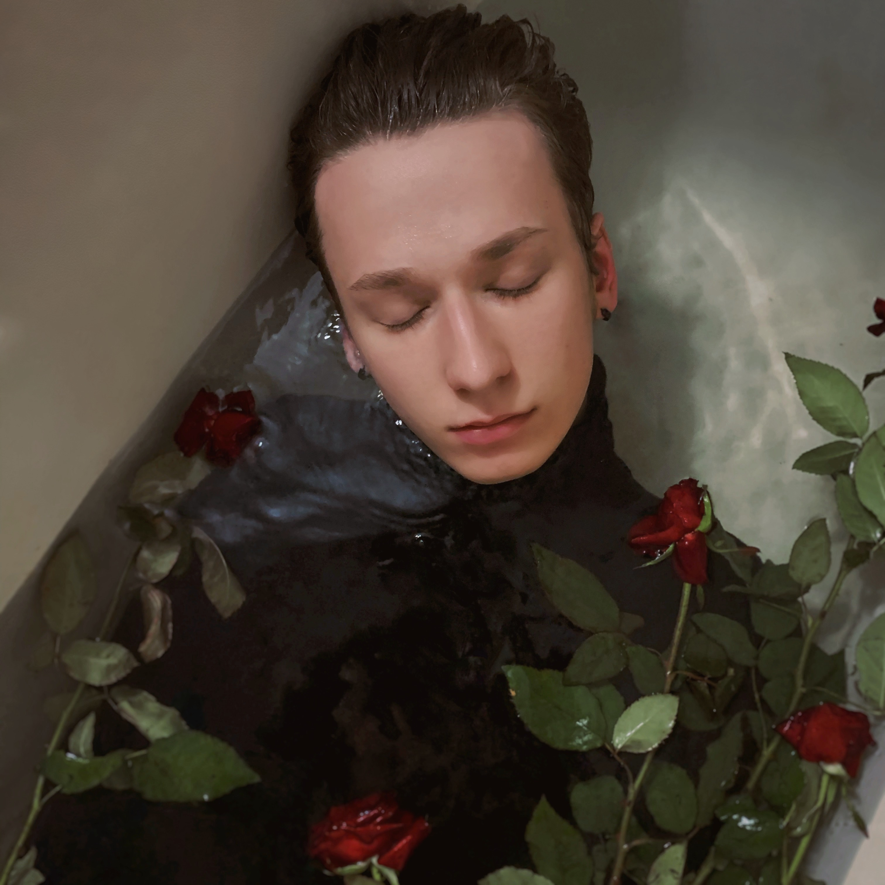
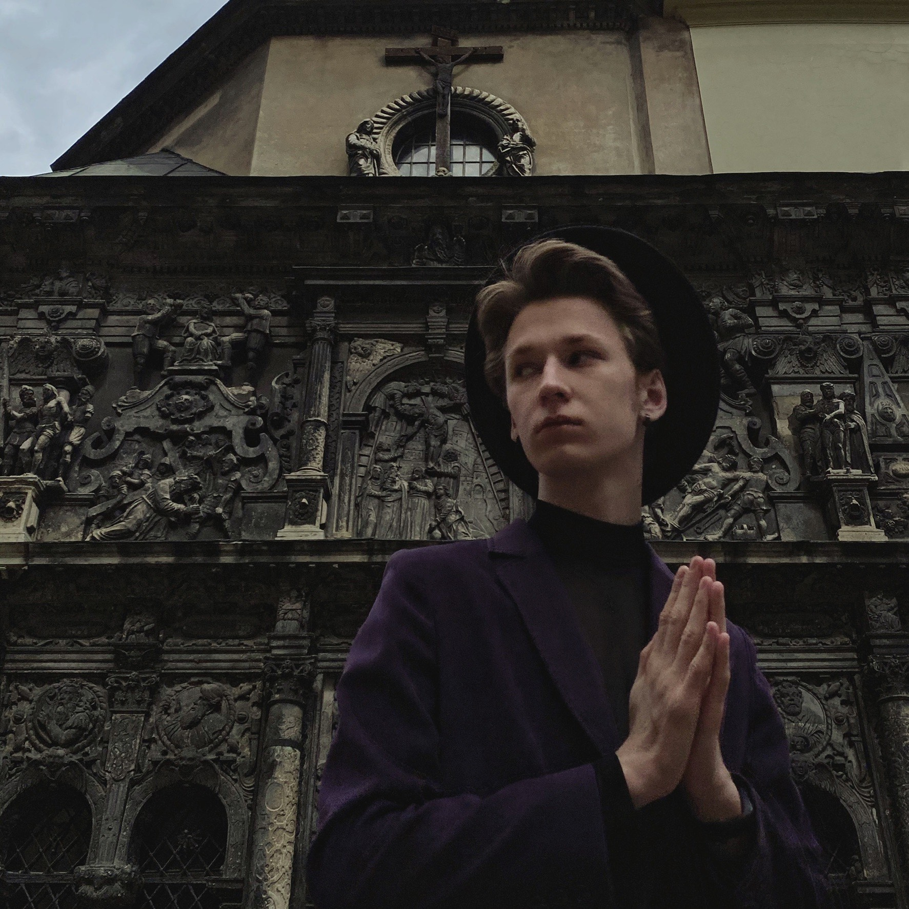

Photography for instagram is much more than just stereotypical posing or selfie-taking: each photo is a story, and you can share paragraphs worth of idea via one shot.
 For me any idea is possible to recreate: one does not need a whole lot of expensive equipment or props to create an atmosphere. What is the mood of your future photo? Gloomy? Then just aim for rainy or cloudy weather, seek gothic or constructivist buildings to stand in front of, and pick out the clothing from your wardrobe that matches somewhat dimmer tones. Need something to hold in your hands? Flowers, books, crosses, broken cameras, or any other piece of clutter that looks vintage can all of the sudden look like an extremely conceptual piece. Trust my words - two of the pictures above were created with minimal preparation; yet, they deliver the intended gothic mood to the audience.